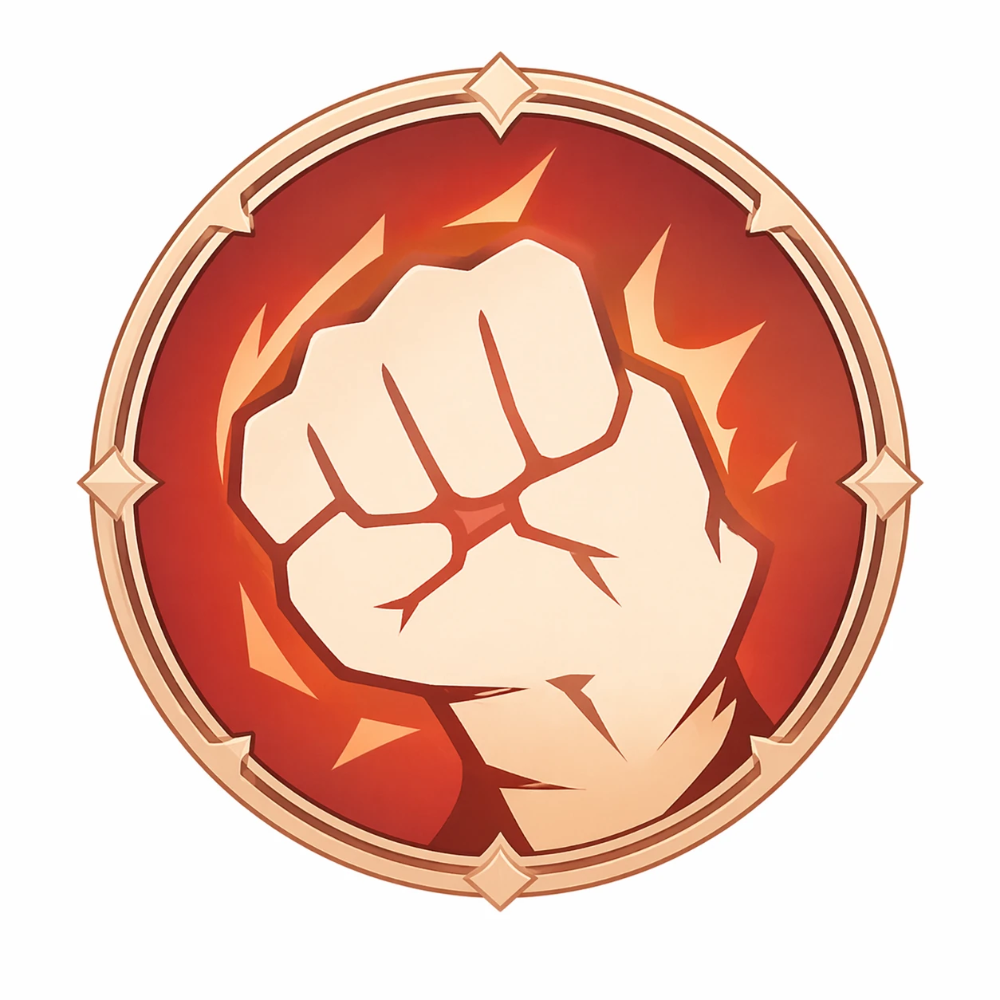
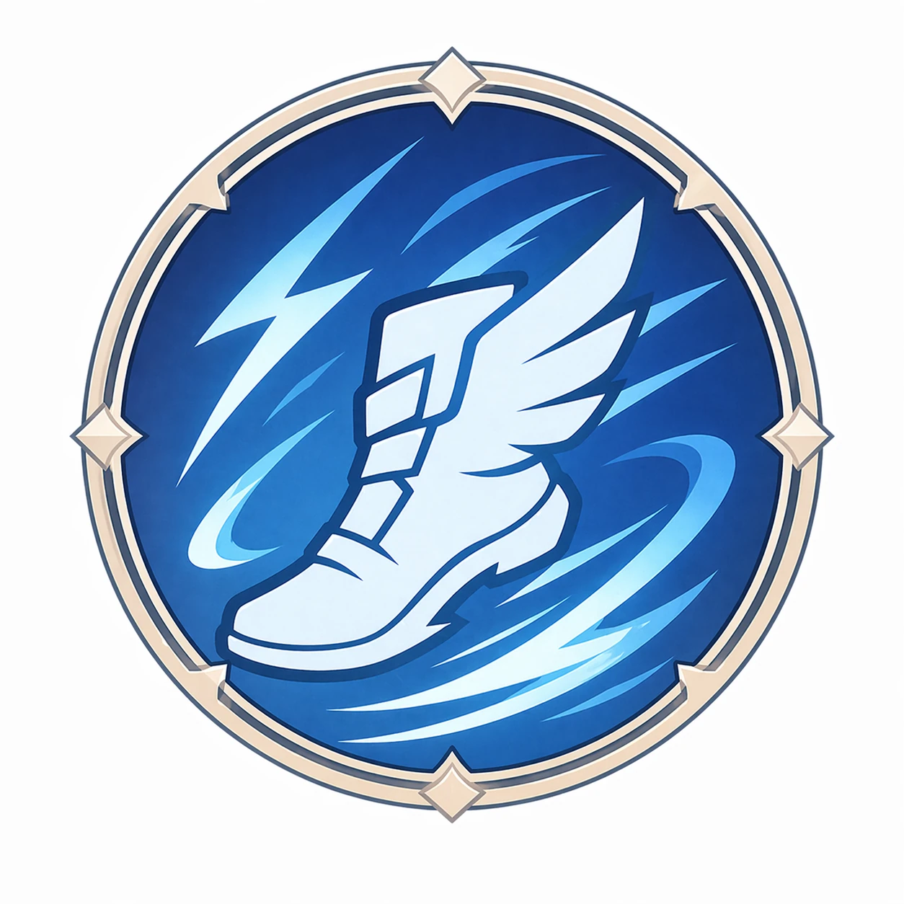
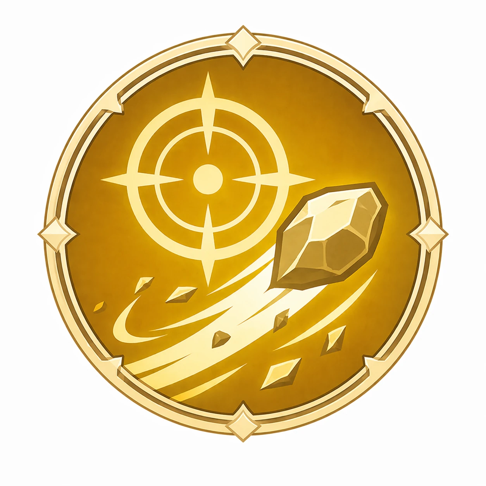
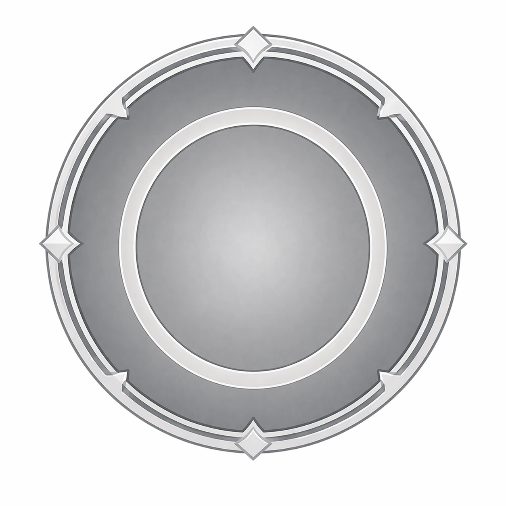

パワー
- 爪オーラが触れた敵に継続ダメージを与える。
- 速い敵に当てると牙撃が発動し、スタン＋大ダメージをあたえる。
- 旋刃は長押しで発動。爪オーラが周囲を一周する。
RARITY
レアリティについて
レアリティが高いほど、エース効果の候補が増える。
また、枠の色は勢力を表す。
※バトルで使用できるエース効果は3つまでとしているため、試合毎に適切な選択を行う必要がある。
※詳しくはバトルのページにて記載
相性が生む、有利と不利。
3つのタイプがじゃんけんのように噛み合う三すくみ。ダメージに倍率はかからない。相手の戦い方を封じられるかどうかで、有利と不利が決まる。




出せる数と、一体の強さ。
デッキに登録できるキャラは最大8枚、合計コスト8以内。
コストが高いほどATK・DEF・MNDが高く、タイプごとのアクションも強くなる。
敵を退却させると、そのコストのぶんだけ味方のBGが溜まる。
味方が退却すると、そのコストのぶんだけ味方の天牙ゲージが溜まる。
特技。一部のキャラだけが持つ。
タイプとは別に、そのキャラだけに備わった力。常にはたらき、戦い方そのものを変える。
エースが、デッキの方針を決める。
攻撃特化やスキル強化、タイプ変更など50種類以上のエース効果がデッキの方針を決める。
エース効果次第でキャラの運用が大きく変わり、戦いは一変する。